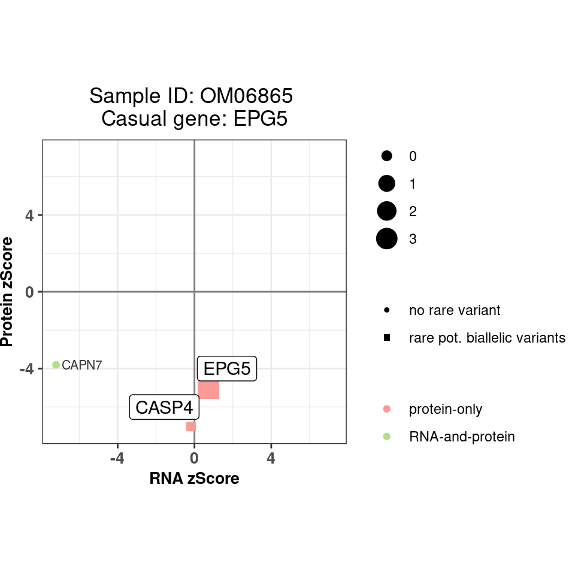
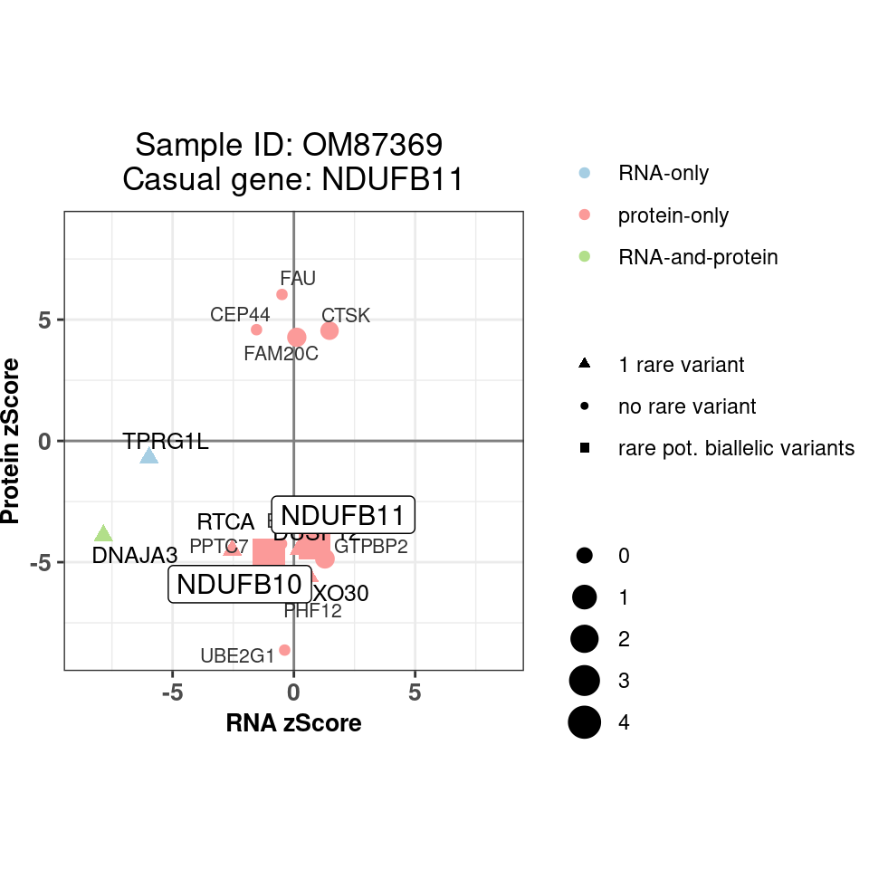
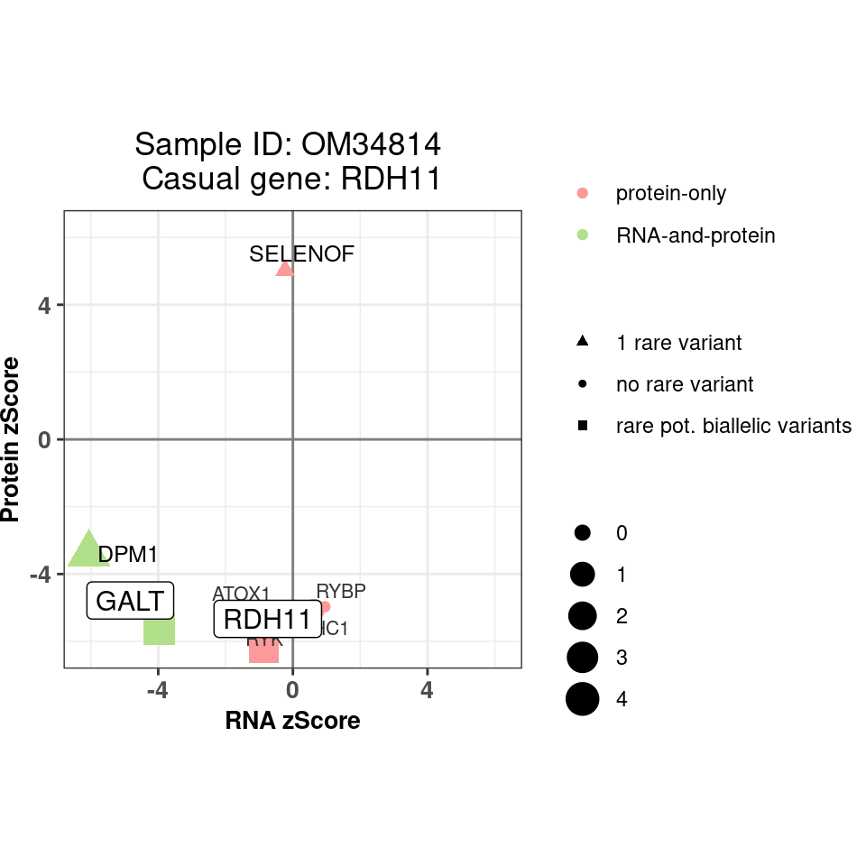
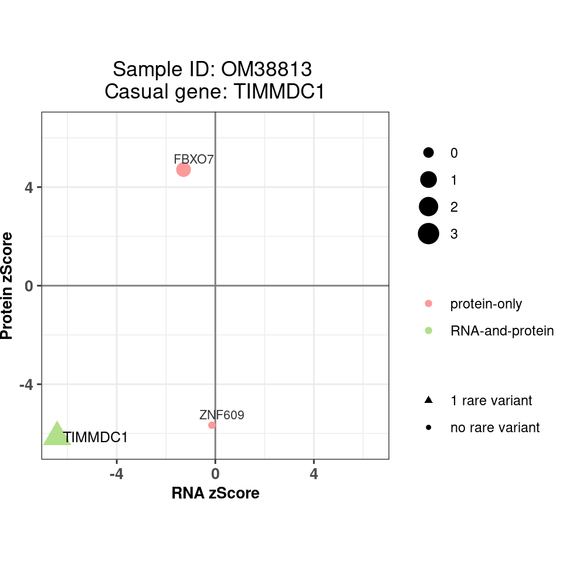
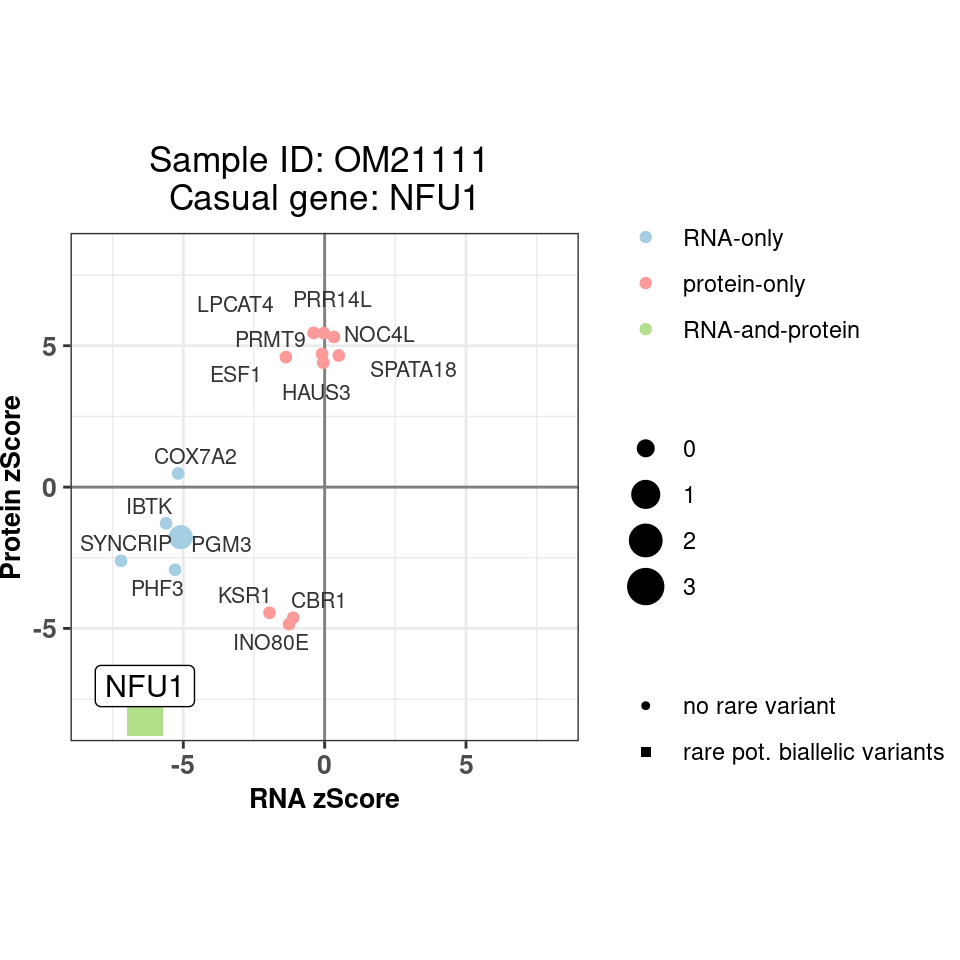
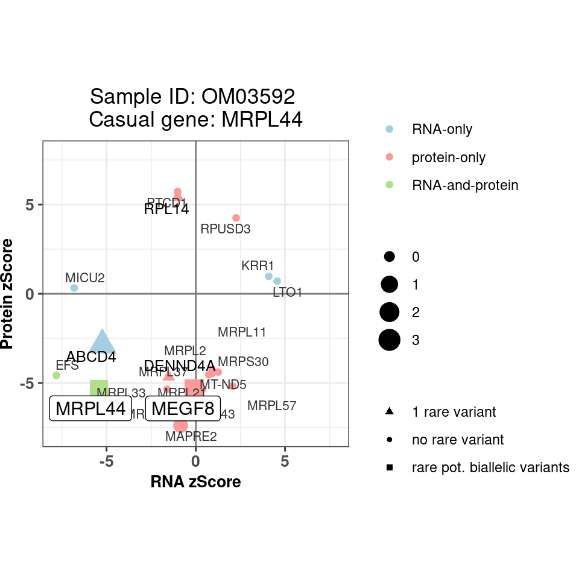
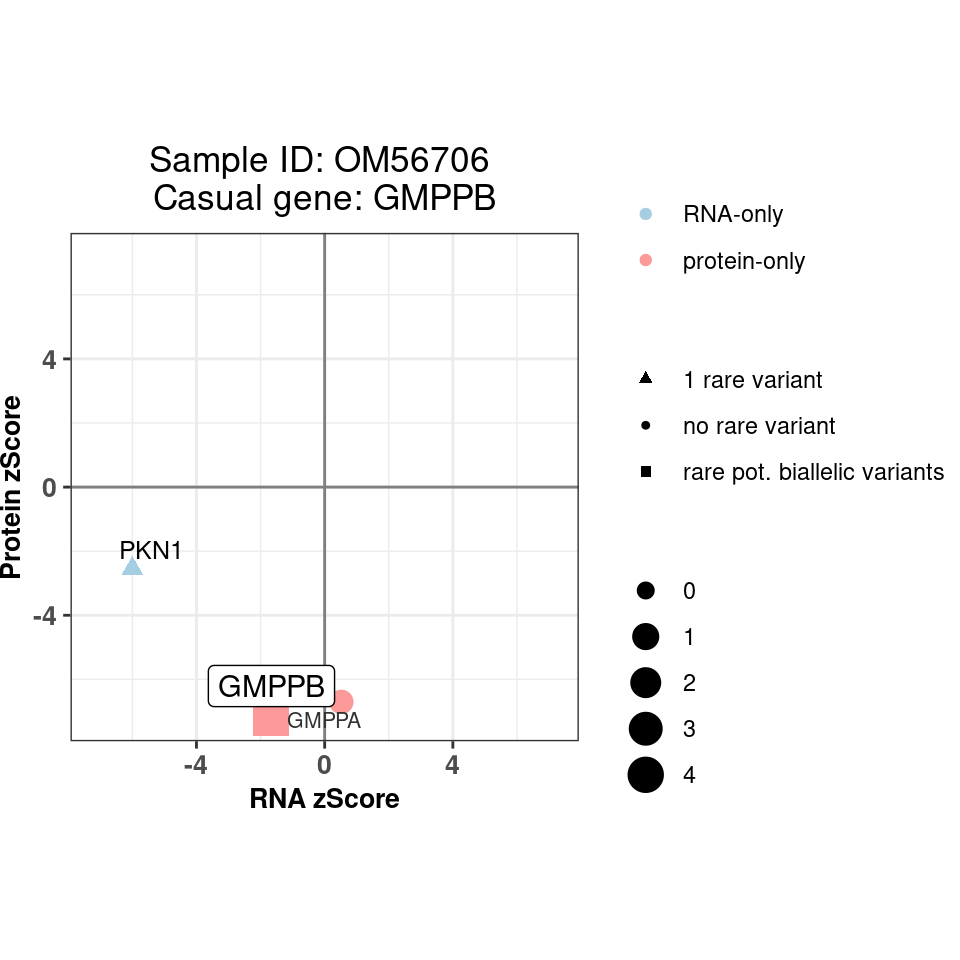
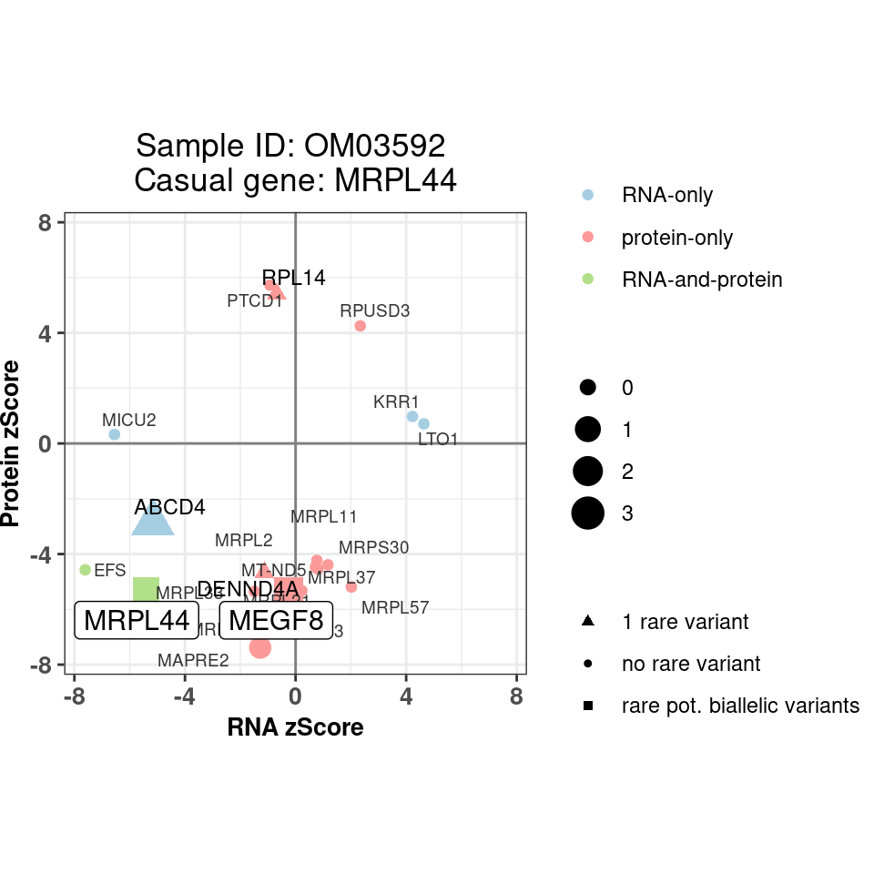
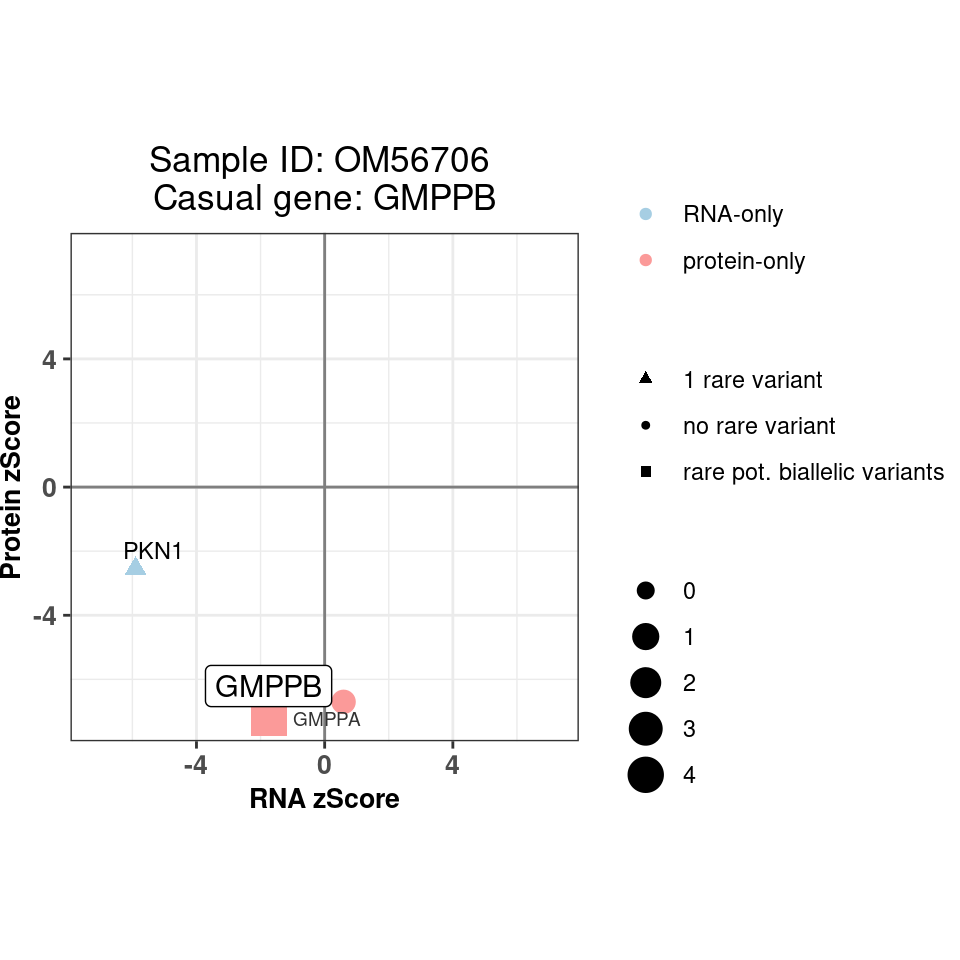

# Load config
source(snakemake@input$config)
# Load plotting functions
source("src/functions/plots.R")
# Load sample annotation
# sa <- fread('/s/project/mitoMultiOmics/multiOMICs_integration/raw_data/proteomics_annotation.tsv')
sa <- fread(snakemake@input$sample_annotation)
sa <- sa[USE_FOR_PROTEOMICS_PAPER == T]
# Subset diagnosed cases from discovery cohort
sa <- sa[ !is.na(KNOWN_MUTATION) & CATEGORY == "III"]
# Remove cases appearing in the main figures
sa <- sa[ !(KNOWN_MUTATION %in% c("LIG3", "MRPL38", "MORC2", "DARS2", "MRPS25") )]
# Read integrated omics file
# rp <- readRDS("/s/project/mitoMultiOmics/multiOMICs_integration/processed_data/integration/patient_omics.RDS") %>% as.data.table()
rp <- readRDS(snakemake@input$patient_omics) %>% as.data.table()
# Subset diagnosed cases and candidates
rp <- rp[SAMPLE_ID %in% sa$SAMPLE_ID]
# Subset outliers only
rp <- rp[ outlier_class != 'non_outlier' | causal_gene == T]
for (i in sa$SAMPLE_ID){
plot_sample <- plot_patient_main(rp, sample = i) +
ggtitle(paste("Sample ID:", i, "\nCasual gene:", sa[SAMPLE_ID == i]$KNOWN_MUTATION ) )
print(plot_sample)
}

IyctLS0KIycgdGl0bGU6IFN1cHBsZW1lbnRhcnkgRmlnIDMgCiMnIGF1dGhvcjogc21pcm5vdmQKIycgd2I6CiMnICBpbnB1dDogCiMnICAtIGNvbmZpZzogJ3NyYy9jb25maWcuUicKIycgIC0gcGF0aWVudF9vbWljczogJ2BzbSBjb25maWdbIlBST0NfREFUQSJdICsgIi9pbnRlZ3JhdGlvbi9wYXRpZW50X29taWNzX2Z1bGwuUkRTImAnCiMnICAtIHNhbXBsZV9hbm5vdGF0aW9uOiAnYHNtIGNvbmZpZ1siQU5OT1RBVElPTiJdYCcKIycgIG91dHB1dDoKIycgb3V0cHV0OiAKIycgICBodG1sX2RvY3VtZW50OgojJyAgICBjb2RlX2ZvbGRpbmc6IGhpZGUKIycgICAgY29kZV9kb3dubG9hZDogVFJVRQojJy0tLQoKCiMgTG9hZCBjb25maWcKc291cmNlKHNuYWtlbWFrZUBpbnB1dCRjb25maWcpCgojIExvYWQgcGxvdHRpbmcgZnVuY3Rpb25zCnNvdXJjZSgic3JjL2Z1bmN0aW9ucy9wbG90cy5SIikKCgojIExvYWQgc2FtcGxlIGFubm90YXRpb24KIyBzYSA8LSBmcmVhZCgnL3MvcHJvamVjdC9taXRvTXVsdGlPbWljcy9tdWx0aU9NSUNzX2ludGVncmF0aW9uL3Jhd19kYXRhL3Byb3Rlb21pY3NfYW5ub3RhdGlvbi50c3YnKQpzYSA8LSBmcmVhZChzbmFrZW1ha2VAaW5wdXQkc2FtcGxlX2Fubm90YXRpb24pCnNhIDwtIHNhW1VTRV9GT1JfUFJPVEVPTUlDU19QQVBFUiA9PSBUXQoKIyBTdWJzZXQgZGlhZ25vc2VkIGNhc2VzIGZyb20gZGlzY292ZXJ5IGNvaG9ydApzYSA8LSBzYVsgIWlzLm5hKEtOT1dOX01VVEFUSU9OKSAmIENBVEVHT1JZID09ICJJSUkiXQoKIyBSZW1vdmUgY2FzZXMgYXBwZWFyaW5nIGluIHRoZSBtYWluIGZpZ3VyZXMKc2EgPC0gc2FbICEoS05PV05fTVVUQVRJT04gJWluJSBjKCJMSUczIiwgIk1SUEwzOCIsICJNT1JDMiIsICJEQVJTMiIsICJNUlBTMjUiKSApXQoKIyBSZWFkIGludGVncmF0ZWQgb21pY3MgZmlsZSAKIyBycCA8LSByZWFkUkRTKCIvcy9wcm9qZWN0L21pdG9NdWx0aU9taWNzL211bHRpT01JQ3NfaW50ZWdyYXRpb24vcHJvY2Vzc2VkX2RhdGEvaW50ZWdyYXRpb24vcGF0aWVudF9vbWljcy5SRFMiKSAlPiUgYXMuZGF0YS50YWJsZSgpCnJwIDwtIHJlYWRSRFMoc25ha2VtYWtlQGlucHV0JHBhdGllbnRfb21pY3MpICU+JSBhcy5kYXRhLnRhYmxlKCkKIyBTdWJzZXQgZGlhZ25vc2VkIGNhc2VzIGFuZCBjYW5kaWRhdGVzCnJwIDwtIHJwW1NBTVBMRV9JRCAlaW4lIHNhJFNBTVBMRV9JRF0KCiMgU3Vic2V0IG91dGxpZXJzIG9ubHkgCnJwIDwtIHJwWyBvdXRsaWVyX2NsYXNzICE9ICdub25fb3V0bGllcicgfCBjYXVzYWxfZ2VuZSA9PSBUXQoKIysgZmlnLndpZHRoPTUsIGZpZy5oZWlnaHQ9NQpmb3IgKGkgaW4gc2EkU0FNUExFX0lEKXsKICBwbG90X3NhbXBsZSA8LSBwbG90X3BhdGllbnRfbWFpbihycCwgc2FtcGxlID0gaSkgKyAKICAgIGdndGl0bGUocGFzdGUoIlNhbXBsZSBJRDoiLCBpLCAiXG5DYXN1YWwgZ2VuZToiLCBzYVtTQU1QTEVfSUQgPT0gaV0kS05PV05fTVVUQVRJT04gKSApCgogIHByaW50KHBsb3Rfc2FtcGxlKQp9CgoKCg==